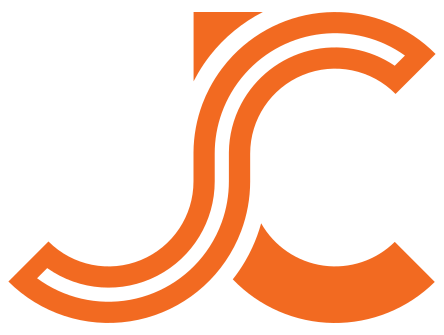
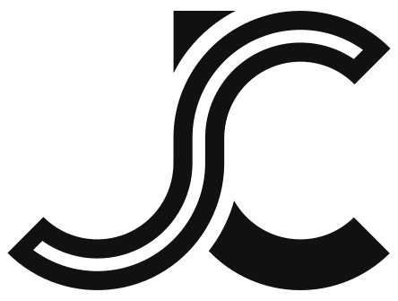
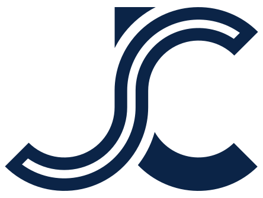
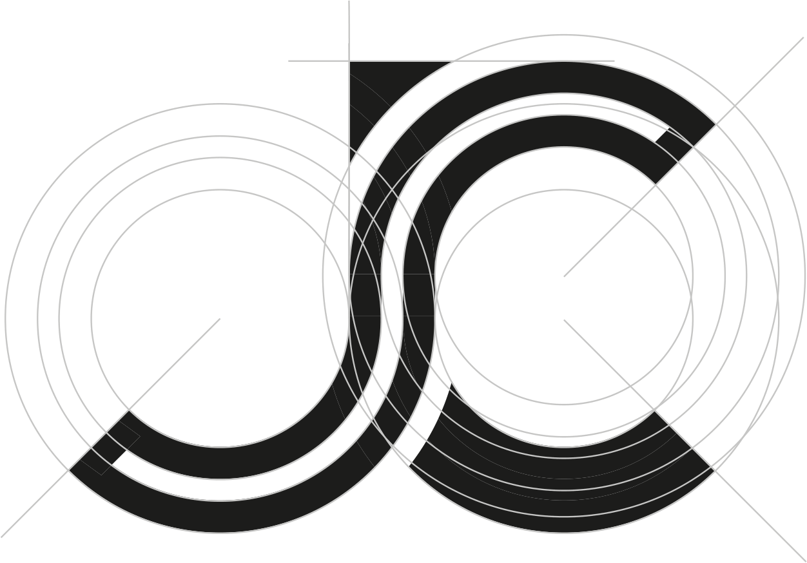
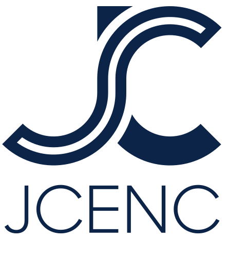
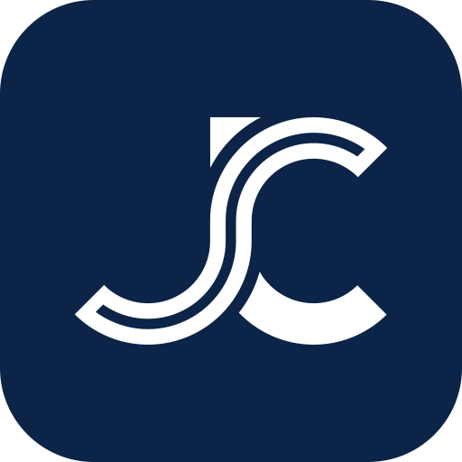

Color Variations
네 가지 운용
기본은 네이비. 강조가 필요할 때 오렌지. 어두운 배경엔 화이트, 단색 인쇄엔 블랙.
Navy · 기본

Orange · 강조

White · 리버스

Black · 단색
J와 C를 강관 단면의 이음선으로 엮었습니다. 원과 아크로만 그린 정밀한 기하 — 제이씨이앤씨가 지하를 지나는 방식 그대로입니다.

두 개의 획을 나누는 얇은 이음선은 비개착 강관추진의 ‘강관 단면’을 상징합니다. 상단의 삼각형은 돛대처럼 세워져 전진과 성장을, C의 열린 곡선은 관통을 뜻합니다.


모든 곡선은 중심과 반지름이 정의된 원호입니다. 두 개의 동심원과 대각 축 위에서 J와 C가 정확히 맞물리도록 설계했습니다. 어떤 크기에서도 형태가 흐트러지지 않습니다.
기본은 네이비. 강조가 필요할 때 오렌지. 어두운 배경엔 화이트, 단색 인쇄엔 블랙.


심볼 단독, 또는 ‘JCENC’ 워드마크와 세로로 조합해 사용합니다.

심볼 획 두께만큼의 여백을 사방에 확보합니다. 다른 요소가 이 영역을 침범하지 않습니다.
비율 왜곡, 회전, 임의 색상, 그림자·효과 추가는 금지합니다.
